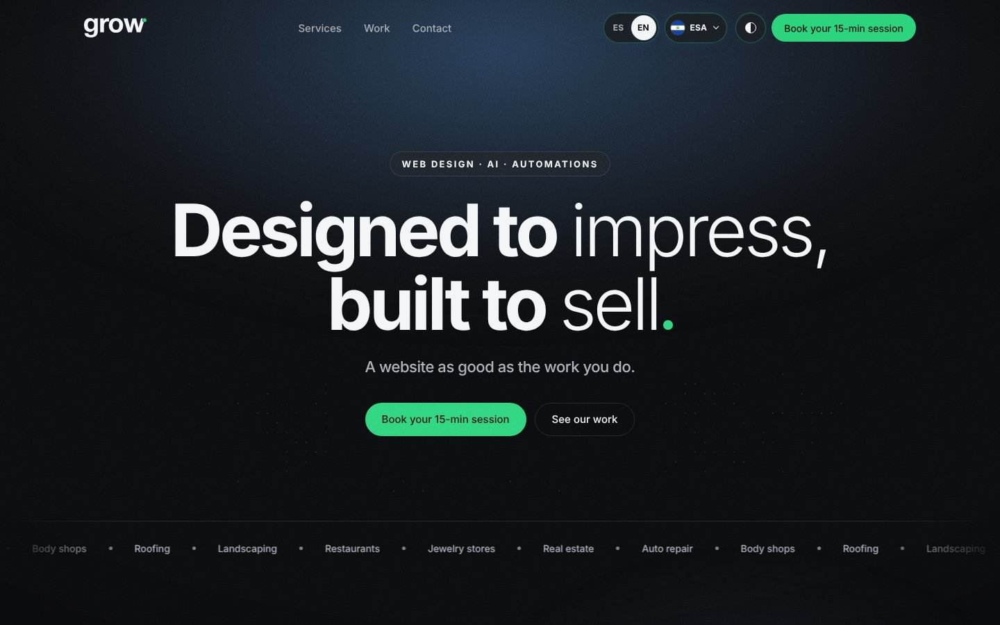
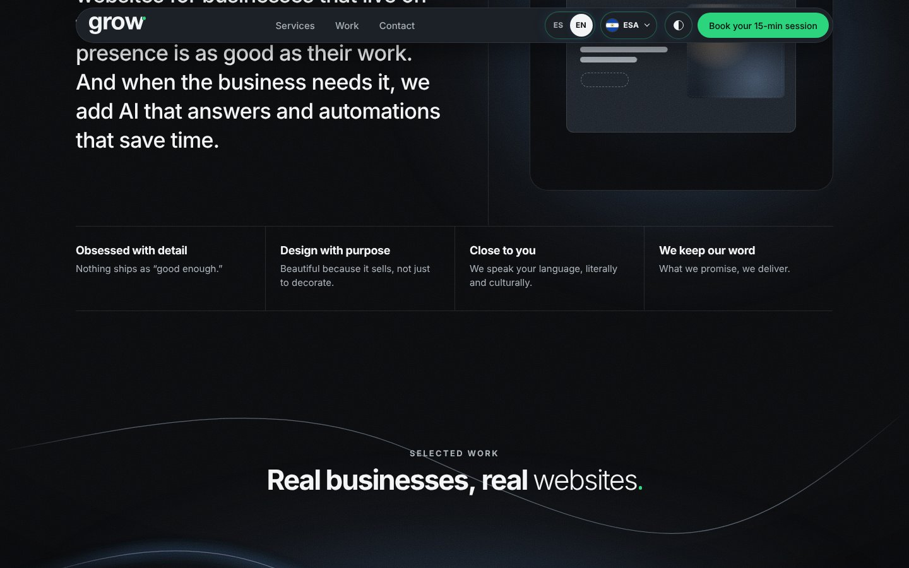
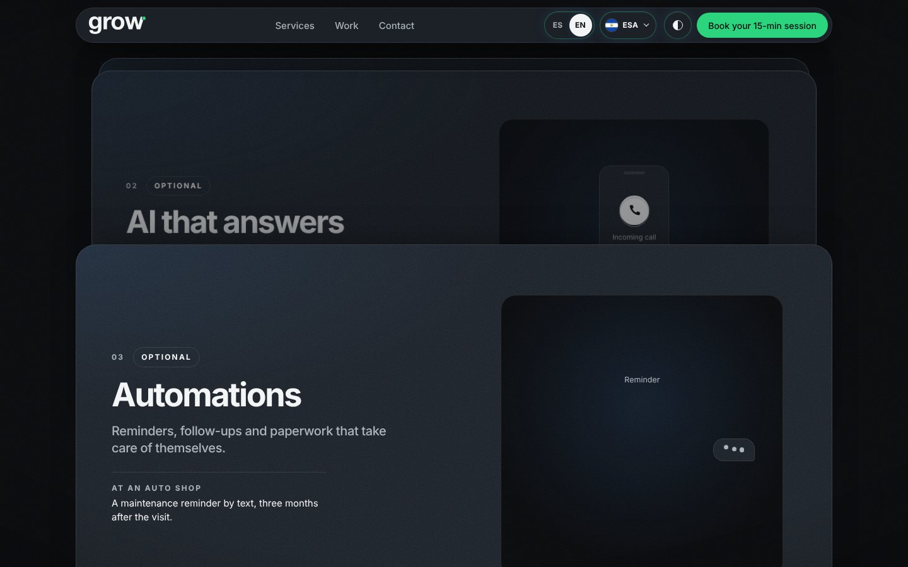
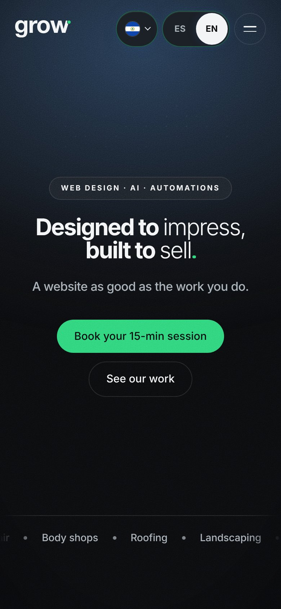
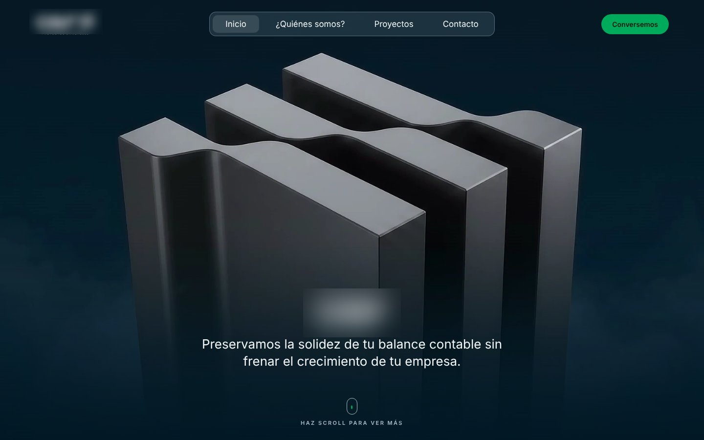
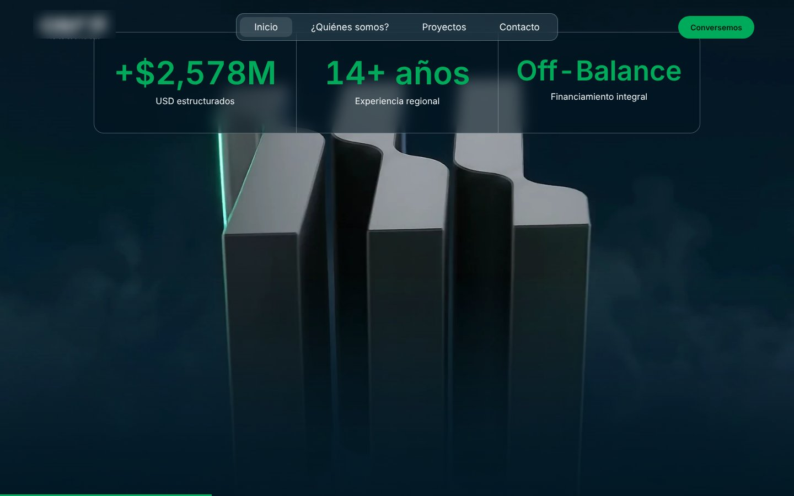
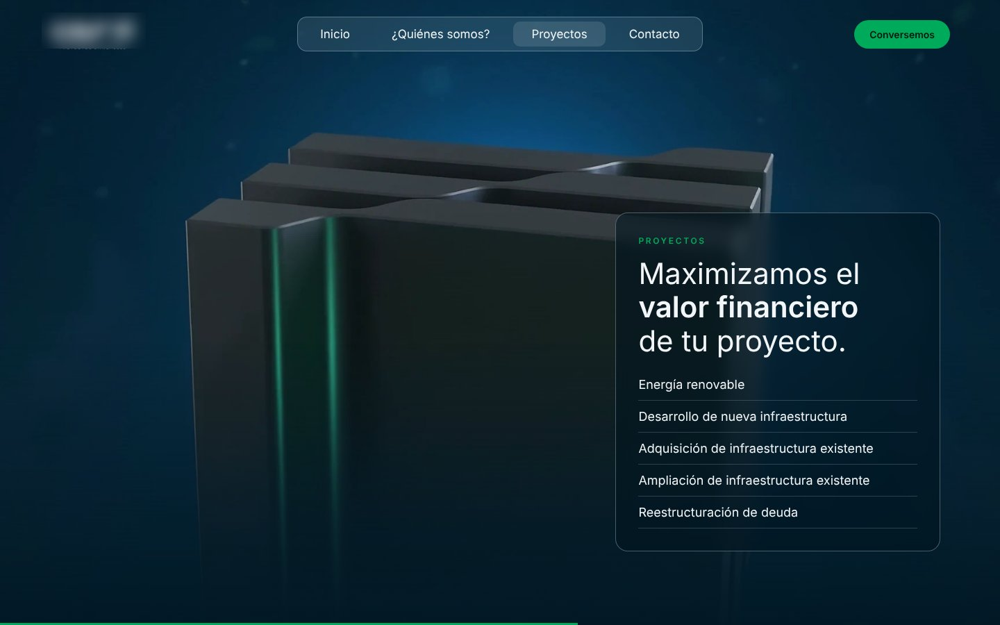

Mi nueva aventura
Diseño web
- Estado
- En desarrollo
- Año
- 2026
- Proyectos
- grow. · Propuesta
- Rol
- Diseño web · Desarrollo
Sobre el proyecto
Después de años haciendo contenido para marcas, empecé a construir el lugar donde ese contenido vive. Diseño y programo sitios web a la medida, con el mismo cuidado por el detalle que pongo en un video.
01
grow.
2026 En desarrollo
grow. es el estudio de diseño web que estoy construyendo con mi equipo: sitios a la medida para negocios latinos en EE. UU. y El Salvador, con IA y automatizaciones como capas opcionales.
Mi rol
Branding · Diseño web · Desarrollo




grow.
"Diseñado para impresionar. Construido para vender."
Conceptos hechos con grow.
Páginas ilustrativas, no clientes
02
Firma de estructuración financiera
2026 Propuesta
Landing page con una secuencia 3D controlada por scroll, programada desde cero, para una firma de estructuración financiera en El Salvador.
Mi rol
Diseño web · Desarrollo front-end


